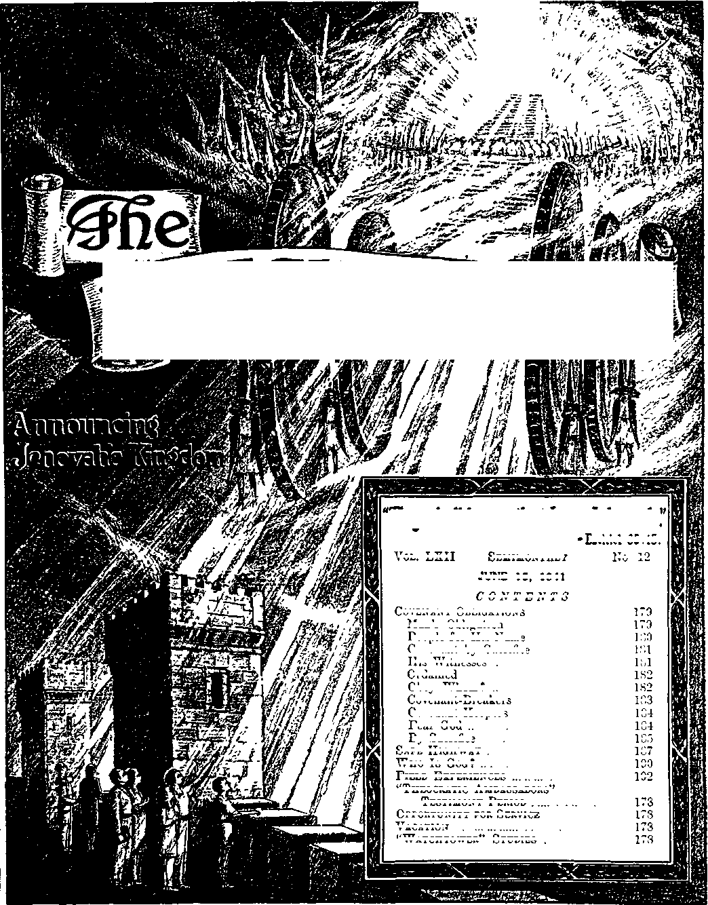

sws
Vol. LXII
Semimonthly
178
178
178
11 8
179
179
180
181
181
181
184
184
18.)
187
190
192
Ezekiel 35:15.
No 12
JUNE IS, 1941
CONTENTS
Covenant Obligations
His Witnesses .
Ordained
Who Is Gog? ...
Field Experiences ..
“Theocratic Ambassadors”
Testimony Period ....
Opportunity for Service
Vacation
“Watchtower” Studies .
Man’s Obligation
People for His Name
Covenant by Sacrifice
Obey Whom? ..
Covenant-Breakers
Covenant-Keepers
Fear God ..
By Sacrifice
Safe Highway .
Published Semimonthly By
WATCH TOWER BIBLE & TRACT SOCIETY
117 Adams Street • - Brooklyn, N.Y., U. S. A.
officers
J. F. Rutherford, President_______W. E. Van Ambuboh, Secretary
“And all thy children shall be taught of Jehovah; and great shall be the peace of thy children.” - Isaiah 54:I3-
THE SCRIPTURES CLEARLY TEACH
THAT JEHOVAH is the only true God, is from everlasting to everlasting, the Maker of heaven and earth and the Giver of life to his creatures; that the Logos was the beginning of his creation, and his active agent in the creation of all things; that the Logos is now the Lord Jesus Christ in glory, clothed with all power in heaven and earth, and the Chief Executive Officer of Jehovah.
THAT GOD created the earth for man, created perfect man for the earth and placed him upon it; that man willfully disobeyed God’s law and was sentenced to death; that by reason of Adam’s wrong act all men are born sinners and without the right to life.
THAT JESUS was made human, and the man Jesus suffered death in order to produce the ransom or redemptive price for obedient ones of mankind; that God raised up Jesus divine and exalted him to heaven above every creature and above every name and clothed him with all power and authority.
THAT JEHOVAH’S ORGANIZATION is a Theocracy called Zion, and that Christ Jesus is the Chief Officer thereof and is the rightful King of the world; that the anointed and faithful followers of Christ Jesus are children of Zion, members of Jehovah’s organization, and are his witnesses whose duty and privilege it is to testify to the supremacy of Jehovah, declare his purposes toward mankind as expressed in the Bible, and to bear the fruits of the kingdom before all who will hear.
THAT THE WORLD has ended, and the Lord Jesus Christ has been placed by Jehovah upon his throne of authority, has ousted Satan from heaven and is proceeding to the establishment of God’s kingdom on earth.
THAT THE RELIEF and blessings of the peoples of earth can come only by and through Jehovah’s kingdom under Christ, which has now begun; that the Lord’s next great act is the destruction of Satan’s organization and the establishment of righteousness in the earth, and that under the kingdom the people of good will that survive Armageddon shall carry out the divine mandate to “fill the earth” with a righteous race.
ITS MISSION
HIS journal Is published for the purpose of enabling the people to know Jehovah God and his purposes as expressed in the Bible. It publishes Bible instruction specifically designed to aid Jehovah’s witnesses and all people of good wilL It arranges systematic Bible study for its readers and the Society supplies other literature to aid in such studies. It publishes suitable material for radio broadcasting and for other means of public instruction in the Scriptures.
It adheres strictly to the Bible as authority for Its utterances. It Is entirely free and separate from all religion, parties, sects or other worldly organizations. It is wholly and without reservation for the kingdom of Jehovah God under Christ his beloved King. It is not dogmatic, but invites careful and critical examination of its contents in the light of the Scriptures. It does not indulge In controversy, and its columns are not open to personalities.
Yeably Subscbiption Price
United States, $1.00; Canada and Miscellaneous Foreign, $1.50; Great Britain, Australasia, and South Africa, 6s. American remittances should be made by Postal or Express Money Order or by Bank Draft. Canadian, British, South African and Australasian remittances should be madedirect to the respective branch offices. Remittances from countries other than those mentioned may be made to the Brooklyn office, but by International Postal Money Order only.
Foreign Omata
British 34 Craven Terrace, London, W.2, England Canadian.......... 40 Irwin Avenue, Toronto 5, Ontario, Canada
Australasian 7 Beresford Road, Strathfield, N. S. W., Australia
Bouth African Boston House, Cape Town, South Africa
Please address the Society in every case.
(Translations of this foumal appear in several languages.)
All sincere students of the Bible who by reason of infirmity, poverty or adversity are unable to pay the subscription price may have The 'Watchtower tree upon written application to the publishers, made once each year, stating the reason for so requesting it. We are glad to thus aid the needy, but the written application once each year is required by the postal regulations.
Kotice to Subscribers: Acknowledgment of a new or a renewal subscription will be sent only when requested. Change of address, when requested, may be expected to appear on address label within one month A renewal blank (carrying notice of expiration) will be sent with the journal one month before the subscription expires.
Entered as second-class matter at the post office at Brooklyn, N. Y., under the Act of March 3, 1879.
“THEOCRATIC AMBASSADORS” TESTIMONY PERIOD
June, for the entire month, is the Period here named. Are you a Theocratic ambassador T You can be, if you take your stand on the side of Jehovah’s Theocratic Government by Christ Jesus and then engage in announcing that government to others. The June Period affords you the opportunity to exercise your ambassadorship. The means provided by the great Theocrat, who sends you forth, is his published Kingdom message, and, during June only, you may offer to the public, on a mere contribution of 35c, a combination of any three bound books published by the Society, excluding the latest books, Religion and Salvation. Prompt advance preparation will be necessary to your most effective part in this Testimony. Any needed references to the local company organized for this service we shall gladly furnish you. May you be able at the end of this month to fill out a good report of work.
OPPORTUNITY FOR SERVICE
The Society may require the service of qualified brethren between the ages of 36 and 50. If you are free to engage in full-time service please write the Society’s office at Brooklyn for a questionnaire.
VACATION
The members of the Bethel family will enjoy their vacation this year from Saturday, August 2, to Wednesday, August 20, inclusive. This will afford them a change from their regular work at headquarters and the opportunity for a larger part in the increasing field work. The factory and office will be closed down during this period, and no books will be shipped nor regular mail answered. lienee all orders for literature should be sent in well in advance of August 2 to receive attention before closing down. Order in sufficient quantity to carry you through the vacation period and the rest of August. Also as little correspondence as possible should be sent to the Society, with the exception of report cards and subscriptions.
“WATCHTOWER” STUDIES
Week of July 20: “Covenant Obligations,” fl 1-29 inclusive, The Watchtower June 15, 1941.
Week of July 27: “Covenant Obligations,”
fl 30-50 inclusive, The Watchtower June 15, 1941.
Vol. LXII June 15, 1941 No. 12
"My covenant will I not break, nor
TEHOVAH, the Almighty God, has announced his I purpose concerning man and has caused that an-
J nounced purpose to be recorded in the Bible, which is his Word. Jehovah’s expressed purpose concerning man constitutes or is God’s covenant concerning man. A “covenant” is a binding promise, or a declaration of purpose, to do or not to do a certain thing. When God makes a covenant he binds himself to keep it faithfully. When God made known to Abraham his purpose to bless obedient men, that declaration constituted God’s covenant. In the great and prophetic picture which God caused to be enacted by Abraham and his son Isaac, Abraham pictured God himself and Isaac pictured the beloved Son of God, the Seed of promise. On that occasion Jehovah God said: “I will richly bless thee, and abundantly multiply thy seed as the stars of the heavens, and as the sand which is on the lip of the sea, that thy seed may take possession of the gate of his foes: so shall all the nations of the earth bless themselves in thy seed.”—Gen. 22:17,18, Rotherham.
2 The above-quoted statement of Jehovah is properly called “God’s covenant with Abraham”. The statement, being an unconditional one, is properly called a unilateral or one-sided covenant. Nothing that any creature can do would hinder Jehovah God in carrying out his announced purpose. Every expressed purpose of Jehovah concerning man is a covenant of Almighty God, which covenant He performs in his own due time. If God takes a man into covenant with him, that is called a two-sided or bilateral covenant. The obligation rests upon both parties to the covenant to carry that covenant into complete operation according to its terms.
’Jehovah God binds himself to perform all his covenants. His announced word of promise is always the truth, and he always keeps or performs his word. Therefore Jehovah says: “I have purposed it, I will also do it.” (Isa. 46:11) “So shall my word be that goeth forth out of my mouth: it shall not return unto me void; but it shall accomplish that which I please, and it shall prosper in the thing whereto I sent it.” (Isa. 55:11) At all times Jehovah has magnified his word, keeping or performing it faithfully
alter the thing that is gone out of my lips.”—Ps. 89:34.
and completely. Concerning this it is written : “Thou hast magnified thy word above all thy name.”—Ps. 138:2.
4 As Isaac, in the prophetic picture, foreshadowed Christ, the Beloved One of God, so also David, in another prophetic picture, represented the Beloved of Jehovah God, who is Christ and who is the Seed of promise. Jehovah’s covenant to bless men under certain conditions is an unbreakable promise and is certain. As God has made the sun to shine, just so certainly will he carry out and fully perform all the terms of that covenant to make Christ Jesus the Head of The Theocratic Government, from which all blessings shall flow to obedient human creatures. Note that Jehovah says concerning this covenant: “My mercy will I keep for him for evermore, and my covenant shall stand fast with him. My covenant will I not break, nor alter the thing that is gone out of my lips.”—Ps. 89: 28, 34.
’ In the exercise of his loving-kindness toward men Jehovah has doubly assured man of his purpose to fully perform His covenant. Not only does he give his word, but he supports and binds his word by his oath. To Abraham he said: ‘By myself have I sworn, In thy seed shall all the nations be blessed.’ (Gen. 22:16-18) “Wherein God, willing more abundantly to shew unto the heirs of promise the immutability of his counsel, confirmed it by an oath; that by two immutable things, in which it was impossible for God to lie, we might have a strong consolation, who have fled for refuge to lay hold upon the hope set before us.” (Heb. 6:17,18) When a man is taken into covenant with Jehovah God there is left no room or reason for that man to have any doubt about God’s carrying out His part of the covenant.
MAN’S OBLIGATION
• Almighty God makes it impossible for his side of the covenant to fail. Can a man who has been taken into a covenant with God treat his obligations under that covenant lightly and violate them or break them with impunity? God’s Word answers: “Covenant breakers ... are worthy of death.” (Rom.
1:31,32) Jehovah made this matter plain to the Israelites, with whom he had made a covenant. What God there announced to the Israelites is his unchangeable law, and which applies to all people who willfully break covenant with God: “Know therefore that the Lord thy God, he is God, the faithful God, which keepeth covenant and mercy with them that love him and keep his commandments, to a thousand generations; and repayeth them that hate him to their face, to destroy them: he will not be slack to him that hateth him, he will repay him to his face. Thou shalt therefore keep the commandments, and the statutes, and the judgments, which I command thee this day, to do them.”—Deut. 7: 9-11.
7 God is faithful in all things he has promised, and he requires faithfulness of all those who undertake to perform an agreement or covenant with him.
WITH WHOM MADE
8 The purpose of Jehovah is a secret to sinful men. Since each announced purpose of Jehovah is a secret, his covenant is a secret to all who are against The Theocracy. What, then, is required of man before he can be taken into covenant with Jehovah? He must fear God. He must believe that God is, and that He is the rewarder of them that diligently seek to serve him. That man must have some knowledge that the Almighty God is Jehovah, the Creator of heaven and earth, the Fountain of life, and the only Giver of life everlasting. He then recognizes Jehovah as the all-powerful one who is just and righteous, and who is entirely unselfish. Believing that all blessings flow from Almighty God, the creature man fears to take any course that would cause him to miss the blessings that God gives. He believes that disobedience to God would cause him to lose God’s favor, and he fears lest he might not receive God’s favor. He desires to be taught of God, that he may go in the right way. He believes he must choose to be for Jehovah or against him, and he fears to choose contrary to the will of God. Concerning such person Jehovah says: “What man is he that feareth the Lord? him shall he teach in the way that he shall choose.”—Ps. 25:12.
9 The man who fears God, and who with diligence seeks to know and to do the will of God, is led in the right way. Such person begins to have faith; and without faith it is impossible to please God and to receive his blessing. Would man know the purpose of Jehovah? How may he find out that purpose? The Lord answers: “The secret of the Lord is with them that fear him; and he will shew them his covenant.”—Ps. 25:14.
10 The man fearing God, diligently seeking the truth, God reveals to that man his purpose. God’s primary purpose is the vindication of his own great name; not for his own benefit, but in order that his creatures who desire righteousness may choose the way of righteousness and live, to the honor of the great Creator. His announced purpose is to accomplish his will by and through Christ Jesus, his beloved Son, whom God has made Christ and Lord and Executive Officer, and to whom he commits all power in heaven and in earth and whom he commissions to carry out his purpose.
11 Following the rebellion in Eden God announced his purpose to have a seed, designated in the Scriptures as “the seed of Abraham”, which is The Christ, and which seed shall administer blessings to obedient men.—Gal. 3:16, 28, 29.
12 Immediately following the wicked act of Lucifer at Eden God declared his purpose to ‘put enmity between the seed of His woman (His organization) and the seed of Satan’, and further stated that the Seed of God’s organization would in due time completely crush Satan and his seed and vindicate Jehovah’s name. That declaration was an unalterable covenant of Jehovah, which covenant Christ Jesus is now carrying into full operation. From Eden till the present time enmity between God’s organization and the seed of Satan, that is, the Devil’s organization, is made manifest. That enmity will end only by the complete triumph of the Seed of Abraham and the vindication of Jehovah’s name.
PEOPLE FOR HIS NAME
18 God announced his purpose to have his name declared throughout all the earth before he exercises his power in the destruction of Satan’s organization. (Ex. 9:16) To have witnesses in the earth to declare his name was God’s announced purpose; and therefore it is written: ‘God first visited to take out of the nations a people for his name . . . that the residue of men might seek out the Lord, and all the nations upon whom my name is called.’ (Acts 15:14-17, Rotherham) All of which was God’s purpose known unto him from the beginning; and likewise the end was known. (Acts 15:18) That covenant of Jehovah is everlasting and unchangeable. All of God’s covenants are everlasting, and are not subject to change, because God does not change.— Mal. 3:6.
HIS COVENANT PEOPLE
14 The people whom God takes out of the nations for his name are his covenant people. They are taken into the covenant with God. They being taken out from the nations, God makes them separate and distinct from all other peoples of the world. They are a people for a purpose, that is to say, for God’s purpose, that they must bear testimony to his name, represent him, and show forth his praises. He has called them out of darkness into the light, and they must make known his light and name. (1 Pet. 2:9,10) Almighty God selects that covenant people for himself, and he selects them for the primary purpose of bearing testimony to his name, and thereafter the life of each one thus taken into the covenant depends upon his faithful performance of all obligations of his covenant by being obedient to the commandments of Almighty God. There is no excuse for him to alter his part of the covenant nor to fail to perform fully every part thereof.
16 God’s manner of taking out people for his name is, in brief, this: He has brought each and every one of them to a realization that Almighty God is Jehovah, and that Christ Jesus is man’s redeemer by the grace of God. Each one who believes these great truths and who has godly fear, the Lord leads into the light of truth and reveals to such his purpose or covenant. Thus God draws the seekers of truth to Christ Jesus, whose precious blood bought all men who obey him. “No man can come to me, except the Father which hath sent me draw him; and I will raise him up at the last day.” (John 6: 44) That sincere man, seeking the way to life, seeks to know God, and to him the wards of Jesus apply: “I am the way, and the truth, and the life; no man cometh unto the Father but by me.” (John 14:6) The seeker for truth and life must therefore walk in the way that Jesus takes, and hence must be obedient to God’s expressed will. (1 Pet. 2:21) Mark then the way of Jesus.
16 Beginning with the coming of Jesus into the world, it is written, he said unto Jehovah God his Father: “Lo, I come ... to do thy will, 0 God.” (Heb. 10: 7) “Then said I, Lo, I come; in the volume of the book it is written of me, I delight to do thy will, 0 my God: yea, thy law is within my heart. I have preached righteousness in the great congregation: lo, I have not refrained my lips, 0 Lord, thou knowest.”—Ps. 40: 7-9.
17 Each and every one who is taken out of the world for the name of Jehovah and taken into the covenant with Jehovah must likewise agree to do and delight to do the will of God. He makes such solemn agreement to do God’s will and thus he obligates himself to perform his covenant. That covenant or agreement binds him unalterably to be obedient to the commandments of God as set forth in his Word.
COVENANT BY SACRIFICE
18 All persons who fully agree to do the will of God and who are selected by Jehovah and taken out of the nations to be a witness to Jehovah’s name are thus taken into the covenant with Jehovah God.
That is a covenant by sacrifice. Those who make a covenant by sacrifice with Jehovah choose to follow in the footsteps of Christ Jesus, and they thereby agree to sacrifice every right and privilege that would conflict with Jehovah’s purpose. Since the selection of the faithful apostles of Jesus Christ and their anointing at Pentecost till now many persons have agreed to do the will of God, and have made a covenant by sacrifice. Those whom God has chosen for himself are those who have faithfully kept covenant with him. With the coming of the Lord Jesus and his enthronement as King, in 1914, Jehovah gives commandment in these words: “Gather my saints together unto me; those that have made a covenant with me by sacrifice.”—Ps. 50: 5.
19 The Lord Jesus Christ gathers unto himself at the temple those who have made a covenant with Jehovah by sacrifice. The temple judgment beginning in 1918 has made manifest those who have shown their faithfulness and devotion to God and his kingdom, and this covenant people of Jehovah he has anointed and sent forth that they might “offer unto the Lord an offering in righteousness”, which offering in righteousness is the praise of Jehovah God and the testimony to his name by devoting themselves faithfully in obedience to his commandment to preach this gospel of the Kingdom. (Mal. 3:3; Heb. 13:15) The covenant obligations of each one thus taken into the covenant require faithfulness in proclaiming the name and the kingdom of Jehovah. They are truly ministers or preachers of this gospel.
HIS WITNESSES
20 Jehovah God takes out from the nations a people for himself; which means that those thus taken out are to be used and must be used for his purpose. His purpose is that his name shall be proclaimed throughout the nations before Armageddon and such proclamation must be made by those whom God has selected. They must tell the people that Jehovah is the only true and almighty God and that Christ Jesus is the King of The Theocratic Government, and that such government is the only hope for peace and life of the people. To that people thus taken out, who are in the covenant, Jehovah says: “Ye are my witnesses, saith the Lord, and my servant whom I have chosen; that ye may know and believe me, and understand that I am he; before me there was no God formed, neither shall there be after me. I, even I, am the Lord; and beside me there is no saviour. I have declared, and have saved, and I have shewed, when there was no strange god among you; therefore ye are my witnesses, saith the Lord, that I am God.” (Isa. 43:10-12) Among Jehovah’s faithful people there are no strange gods, either of men or of angels. The faithful are devoted wholly to Jehovah, the only true and almighty God.
21 The nations of the world act by and through their governing elements, claiming the right to rule even though Christ Jesus the King has come. Those who are of Satan’s organization and under his dominating power are by Satan blinded to the truth. Hence they insist on ruling the earth contrary to the will of God. Regardless of whether or not they are sincere in their conclusions, they are in darkness as to God’s purpose. They have no knowledge or appreciation of his covenant. They have natural eyes and ears, but they cannot see and cannot hear, and do not give heed to the Word of God, and they have no vision of his purpose. Concerning them Jehovah says: “Bring forth the blind people that have eyes, and the deaf that have ears. Let all the nations be gathered together, and let the people be assembled; who among them can declare this, and shew us former things? let them bring forth their witnesses, that they may be justified; or let them hear, and say, It is truth.”—Isa. 43: 8, 9.
22 The time of climax has come, and now those who are devoted to Jehovah, and who therefore are his covenant people, must obey his commandments and boldly and fearlessly declare his name and his kingdom throughout the land.
ORDAINED
22 All of the covenant people, whom Jehovah has taken out for his name and sent forth as his witnesses, the Almighty God by his spirit has ordained or commissioned to proclaim his name and his kingdom. God has made them preachers or ministers of the gospel. Such are duly ordained ministers appointed and commissioned by the highest authority, regardless of what men may do, say or think. These are the words of ordination, commission and authority, which God has caused to be recorded for such covenant people: “The spirit of the Lord God is upon me; because the Lord hath anointed me to preach good tidings unto the meek; he hath sent me to bind up the brokenhearted, to proclaim liberty to the captives, and the opening of the prison to them that are bound; to proclaim the acceptable year of the Lord, and the day of vengeance of our God; to comfort all that mourn.”—Isa. 61:1, 2.
21 Christ Jesus, the great Judge at the temple, as Jehovah’s Executive Officer, sends forth such ordained ministers with the order and command that they must declare the good news or gospel that the kingdom of Jehovah is here and that his kingdom is the only hope of humankind. Therefore Jesus commands: “And this gospel of the kingdom shall be preached in all the world for a witness unto all nations; and then shall the end come.”—Matt. 24:14.
” This testimony to the name of Jehovah and to his Theocratic Government must be given by his ordained ministers immediately preceding the time of great tribulation, which is Armageddon. (Matt. 24:21) There is no distinction between male and female (Gal. 3:28), but all who are chosen of God and taken into a covenant with him and sent forth are ordained ministers to preach this gospel of the great Theocracy. No earthly power has any authority to set aside this high ordination and commission. The Watch Tower Bible and Tract Society, an organization acting in behalf of and with Jehovah’s witnesses in order to do things orderly and carry on the work in an organized and orderly manner, sends out such witnesses, and thus an earthly ordination is provided, but that is always subject to the ordination of the Almighty God. Such persons are the true representatives of the Lord and the true ministers of God on earth.
26 It is the express will of God that his covenant people are and must ever be separate and distinct from the world, that is, from the things and from the powers that attempt to rule this evil world. To such the Lord says: Ye are not of the world, even as I am not of the world.’ (John 15: 18,19) Jesus is the Faithful and True Witness of Jehovah; and all his followers,. taken out from the nations for Jehovah’s name, must likewise be faithful and true witnesses to the name and kingdom of God and therefore must keep themselves unspotted or separate from the world.—Jas. 1:27.
OBEY WHOM?
27 All the nations of the present world are against The Theocracy. There are amongst the nations of earth two mighty factions which claim the right to rule, and both of which are against the rule of the world by Christ Jesus, who is Jehovah’s King, holding full authority. The covenant people of God are on his side and entirely devoted to his purpose, and therefore must be and are at all times neutral in all things of controversy between the nations of this evil world. If the nations of this world see fit to engage in war, that is for the nations themselves to determine and it is their responsibility. With such wars the covenant people of God have nothing to do, and in obedience to God’s commandment these must remain neutral, separate and apart. They must hold themselves aloof from all such wars and controversies and devote themselves to the service of the great Theocracy. The reason for such neutrality is discussed more fully and at length in The Watchtower 1939, pages 323-333.
“When the law of men, made by nations of the earth and put into force, commands the doing of that which is directly in conflict with the commandments of Jehovah God addressed to his covenant people, what is the position of Jehovah’s covenant people with reference thereto? The apostles of Jesus Christ, Peter, John and others, were sent forth to preach and to represent The Theocracy, and, being in a covenant with Jehovah God and therefore governed strictly by the will of God, answered the foregoing question, and which answer is the one given by all of God’s covenant people to like questions. That answer is: “We ought to obey God rather than men.” (Acts 5:29) “But Peter and John answered and said unto them, Whether it be right in the sight of God to hearken unto you more than unto God, judge ye.” (Acts 4:19) One’s obligations under his covenant require him to faithfully follow this divinely announced rule.
29 Those faithful apostles of the Lord, because they persisted in keeping their covenant with God and obeying God’s commandments rather than men, were arrested, ill-used, thrown into prison, and beaten. When released from prison they went straightway forward in preaching the gospel in obedience to God’s commandment. They did not fear what man might do to them. They feared God and obeyed Him. Suppose they had taken a compromising course by obeying the commandments of men, and had done so in order to avoid bodily punishment and yet preached the gospel on the sly, when rulers might not find it out. That would have been a course of compromise and would have constituted a failure to keep covenant with God. Such would have been breaking their covenant because of fear of men. The fear of man leads into a snare of Satan, which means everlasting destruction. That same rule applies to all of God’s covenant people today.—Prov. 29: 25; Rom. 1: 31, 32; Rev. 21: 8.
COVENANT-BREAKERS
30 A person who is not in a covenant with God is in a position far different from that of the person who is in a covenant to do the will of God. Those not covenant people of God are not here considered. Only those who have entered into a covenant to do the will of God are here considered. The obligation of such is that they must keep the terms of that covenant, the keeping of which is of vital importance. With Jehovah a covenant is a sacred thing, not to be broken or altered with impunity. How God regards and treats covenant-breakers may be correctly seen by reference to the treatment of such as is recorded in the Bible, some examples of which are cited here.
31 God made a covenant with the people of the nation of Israel. That people agreed to keep the terms of the covenant with Almighty God. (Ex. 19:5-8) God commanded that people to keep themselves separate and distinct from all the nations that indulged in demonism or religious service of the demon gods, declaring unto them that serving such gods “will be a snare unto thee”. (Deut. 7:16) The nation of Israel was duty-bound to faithfully keep and perform the terms of that covenant. They failed to do so. They broke their covenant. “They kept not the covenant of God, and refused to walk in his law. For their heart was not right with him, neither were they stedfast in his covenant. For they provoked him to anger with their high places, and moved him to jealousy with their graven images.” (Ps. 78:10, 37, 58) “And they served their idols; which were a snare unto them.” (Ps. 106: 36) “Seeing he despised the oath by breaking the covenant, when, lo, he had given his hand, and hath done all these things, he shall not escape. Therefore thus saith the Lord God, As I live, surely mine oath that he hath despised, and my covenant that he hath broken, even it will I recompense upon his own head.” —Ezek. 17:18,19.
32 God punished those covenant-breakers with destruction. (Amos 3:2) God pronounced the final judgment upon that nation breaking covenant, and the nation was left desolate. (Matt. 23:38) Thus the fixed rule of Jehovah is made known that covenant-breakers are worthy of death and suffer death, and one who willingly breaks his covenant or willingly avoids the obligation thereof puts himself in the way of complete destruction.
33 God made known first to Noah his covenant concerning the shedding of blood. (Gen. 9:6-16) It is the covenant of the sanctity of life and is an everlasting covenant, and by its terms this is announced: “Whosoever sheddeth man’s blood, by man shall his blood be shed: for in the image of God made he man.” To all of his covenant people God commands: “Thou shalt not kill.” (Ex. 20:13) “Vengeance is mine; I will repay.” (Rom. 12:19) God’s law fixes the death penalty for anyone who willfully violates that commandment. His law provides for the execution of the violators of his law. Human life can be properly taken only by God’s specific provision. He has appointed his Executioner. The slaughtering of human creatures in war or otherwise is a violation of God’s covenant concerning the sanctity of life. That is an everlasting covenant, not subject to change.
34 The nations of the earth are bound to observe that covenant of blood because it is God’s law concerning life. Every nation has violated that everlasting covenant by killing many of God’s faithful servants and also by slaying many other innocents. Concerning the breaking of that covenant Jehovah God says: “Behold, the Lord maketh the earth empty; and maketh it waste, and turneth it upside down, and scattereth abroad the inhabitants thereof. The earth mourneth, and fadeth away; the world languisheth, and fadeth away; the haughty people of the earth do languish. The earth also is defiled under the inhabitants thereof, because they have transgressed the laws, changed the ordinance, broken the everlasting covenant.” (Isa. 24:1,4, 5) That state of affairs will be fully realized at Armageddon. These scriptures are cited to show that no one can break God’s covenant and escape the penalty prescribed for so doing. With stronger force does this rule apply to everyone who is taken into a covenant with the Lord God to be a witness to his name.
BECAUSE OF FEAR
” The Scriptures tell of men who broke covenant with God because of fear of man, and that such covenant-breakers suffered the penalty of death. One of such was the prophet Urijah. That prophet was deterred from performing his covenant obligations because of the threats made against him by men; and, fearing man, he fled. God did not protect him and he was seized and killed. Thus God shows that he does not protect covenant-breakers. —Jer. 26:20-23.
COVENANT-KEEPERS
“ In striking contrast to unfaithful Urijah is the prophet Jeremiah, who was a faithful witness of Jehovah. Jeremiah refused to compromise with the government of the nation of Palestine, and held fast to his covenant with Almighty Godk Jeremiah proclaimed the name of Jehovah and warned the people as God had commanded him to do. Even though he was repeatedly threatened with death, he steadfastly went on obeying God. In doing that work Jeremiah was a type picturing Jehovah’s witnesses now on the earth who declare the name of Jehovah and his Theocracy. The rulers of Jerusalem, including the religious teachers and leaders, sought to have Jeremiah put to death because he held fast to the performance of the obligations of his covenant with God. “And all the people were gathered against Jeremiah in the house of the Lord.” The religious leaders had stirred up the people against him as an excuse to demand that Jeremiah be put to death. That part of the divine record referring to the same is: “Then spake the priests and the prophets unto the princes, and to all the people, saying, This man is worthy to die; for he hath prophesied against this city, as ye have heard with your ears. Then spake Jeremiah unto all the princes, and to all the people, saying, The Lord sent me to prophesy against this house, and against this city, all the words that ye have heard. As for me, behold, I am in your hand; do with me as seemeth good and meet unto you; but know ye for certain, that if ye put me to death, ye shall surely bring innocent blood upon yourselves, and upon this city, and upon the inhabitants thereof; for of a truth the Lord hath sent me unto you to speak all these words in your ears.”—Jer. 26:11,12,14,15.
57 Jeremiah stood firm and steadfast for God and faithfully served him. God provided protection of Jeremiah against the venom of the rulers, “that they should not give him into the hand of the people to put him to death.”—Jer. 26:24.
FEAR GOD
” Jeremiah did not fear man nor what man might do unto him; and in this he pleased God, and God manifested his power in Jeremiah’s behalf. One who is in a covenant with God, and who fears what man might do to harm him, and for that reason yields to the point of violating his covenant, is unclean and cannot receive God’s approval. As is shown in the case of Urijah, so with all covenant-breakers. Such unclean ones must suffer death at the hands of Jehovah. God’s covenant people who continue faithful to the end in fulfilling their obligation are, of course, those who do not fear men. They do fear God. “The fear of the Lord is clean, enduring for ever.” (Ps. 19:9) Those who have godly fear put their full trust in the Most High. All those who are in a covenant with Jehovah, and are therefore for The Theocracy, continue to fear God.
” God announced his rule concerning those who break their covenant, in these words: “Jehovah thy God is a devouring fire.” (Deut. 4: 24, A.R.V.) That means that those who because of fear of man fail or refuse to perform their covenant obligation suffer destruction at the hands of Jehovah’s Executioner. The faithful apostle repeated those words, which are addressed to all who are in a covenant with God for the Kingdom. His words apply to those who are assembled at the temple. They are addressed to God’s covenant people, applying at a time when all the world is in great distress and turmoil and at the time when God is permitting to be shaken out of his kingdom everything that can be shaken. These words thus recorded for the benefit of God’s covenant people are: “Wherefore we receiving a kingdom which cannot be moved, let us have grace, whereby we may serve God acceptably with reverence and godly fear: for our God is a consuming fire.”—Heb. 12: 28, 29.
40 As it was with Jeremiah, so it is now with God’s people on the earth who are in a covenant for the Kingdom. The worldly powers put forth strong endeavors to cause Jeremiah to violate his covenant by conforming himself to worldly ideas. Jeremiah remained steadfast. Likewise today the worldly powers endeavor to force God’s covenant people to repudiate their covenant and to break the terms thereof by conforming themselves to the things of this world, and which things are contrary to Jehovah’s commandment. God’s faithful covenant people remain steadfast to Jehovah, faithful to the terms of their covenant and The Theocracy, regardless of all threats or acts leveled against them. Jeremiah’s experiences are recorded for the benefit of God’s covenant people now on earth.—Rom. 15: 4.
41 The totalitarian ruling powers, composed of Nazis, Fascists and big religious leaders, now stand where they ought not to stand, claiming the right to rule the world, and demanding that Jehovah’s covenant people shall hail and bow down to totalitarian rulers, join their armies, and fight under their banners, and when Jehovah’s covenant people refuse to do so they are imprisoned and many put to death. In the face of all this God’s covenant people stand firm on the side of The Theocracy even though they see other faithful ones being imprisoned and sent to death. The ruling powers of this world that oppose the totalitarian rule also demand of Jehovah’s covenant people that they, in violation of their covenant, enlist and fight under the banner of such rulers; and if Jehovah’s covenant people refuse to do so they suffer imprisonment or other harsh punishment, even death. Although the law of such nations declares that a minister shall not be required to do military service, the acting authorities who have to do with carrying the law into operation say to these faithful covenant people of God: "We do not recognize you as a minister, nor that you are a sincere, conscientious objector to engaging in war; therefore you must join the fighting forces and serve under our banner.”
42 The faithful covenant people of God answer: ‘’We cannot do so; we are in a covenant with Almighty God to do His will. To obey your commandment we must violate our covenant with God; and if we do so we shall suffer eternal destruction at the hands of Almighty God. We willingly conform ourselves to every law of the land that does not cause us to violate our covenant with Jehovah, as He has commanded. Almighty God has made us his witnesses and his ministers to preach this gospel of his kingdom by informing the peoples of the world of his name and his provision for peace and life for mankind. Almighty God has ordained us thus to preach. We have covenanted to do his will. To him we will remain faithful and true, regardless of what men may do to us. We do not wish to suffer imprisonment or other punishment at the hands of men. We know that the worst punishment to which we may be subjected by men of this world is death; but that means only the death of our human life. If we suffer death because of our faithfulness to Almighty God and the terms of our covenant, we have the sure promise from God that he will resurrect us to eternal life. If we violate our covenant with Jehovah God we suffer eternal death, from which there is no resurrection. For us there is but one choice, and that is to faithfully perform our covenant obligations to Jehovah and his King. If you choose to punish us because of our faithfulness to God and our covenant, that is your responsibility, and you must bear it. Be assured of this one thing, however: if we suffer punishment at your hands because we stand firmly and perform the terms of our covenant with Almighty God, the Lord God will duly punish you and you will find no way of escape from that punishment. We will do harm to no one, but the Almighty God, whom we serve, will see to it that if we are wronged we shall be avenged, because he has so promised and he always keeps his promise.”—Luke 18:7,8.
43 That which is recorded concerning the firm, immovable stand of Jeremiah for Jehovah was there written and recorded for the purpose of encouragement to the covenant people of God now on the earth. (Rom. 15:4) The faithful covenant people of God now have in mind the words of Jesus Christ spoken for their comfort, to wit: “And fear not them which kill the body, but are not able to kill the soul; but rather fear him which is able to destroy both soul and body in hell.”—Matt. 10: 28.
44 The faithful covenant people of God will not fear man nor what man can do. They do fear Almighty God, and obey him and serve him. The power of wicked men ends with death. The power of Almighty God is eternal. If one dies unfaithful to God, that is the everlasting end of him. If he dies because he is faithful to Jehovah and to the obligations of his covenant Jehovah will resurrect that faithful one to life eternal.
by sacrifice
45 At the coming of Christ Jesus to the temple the words of Jehovah apply, to wit: ‘Gather unto me those that have made a covenant with me by sacrifice.’ What is the meaning of the words “covenant by sacrifice”! They mean the giving up of everything pertaining to the earth. They mean the sacrifice of the individual human will to the complete doing of the will of Almighty God. The man thus doing that knows that he is going right and walking in the way that leads to everlasting life. To those who will be of the Kingdom the covenant by sacrifice means the-giving up of the right to live as human creatures on earth. To such the assurance is given that if he continues faithful in the keeping of his covenant he shall in due time receive from the Lord everlasting life in the spirit, and that he will receive at the resurrection. That faithful creature goes down into death a human, and God raises him up to life a spirit, to live forevermore. (1 Cor. 15:43-53) From the standpoint of the world the faithful covenant-keepers go into death in ignominy and dishonor. But Almighty God raises up such to life, honor and glory.
46 Why should a man hesitate to faithfully keep covenant with Jehovah, regardless of all human opposition or punishment, threatened or applied! The person who has not made a covenant with Jehovah God, and who therefore does not know God, cannot understand and hence cannot answer the question. The man who is in a covenant with Jehovah, and who has partaken of the knowledge of the good things to be given by the Lord, does not permit himself even to debate in mind as to whether or not he should obey man and thereby break his covenant. He is determined to keep his covenant obligations faithfully to the end, regardless of what may be done against him by any human power.
47 A striking and apt example of a faithful covenant-keeper is the apostle Paul, once a religionist and later a true Christian, following the lead of Christ Jesus. When becoming a Christian he soon learned that he would suffer persecution because of his full devotion to God and Christ. But that did not deter him at all or move him from his course of faithfulness. He said: “And now, behold, I go bound in the spirit unto Jerusalem, not knowing the things that shall befall me there: save that the holy [spirit] witnesseth in every city, saying that bonds and afflictions abide me. But none of these things move me, neither count I my life dear unto myself, so that I might finish my course with joy, and the ministry, which I have received of the Lord Jesus, to testify the gospel of the grace of God.” —Acts 20:22-24.
48 Because Paul kept the obligation of his covenant faithfully he suffered many stripes and imprisonment; but still he continued preaching Christ and his Kingdom, while he lingered behind prison walls. At one time he had much of this world’s goods and honor, all of which he gladly sacrificed, not counting even his human life as dear to him, in order that he might fulfill the terms of his covenant. To his fellow Christians also in a covenant with God he wrote: “But what things were gain to me, those I counted loss for Christ. Yea, doubtless, and I count all things but loss for the excellency of the knowledge of Christ Jesus my Lord; for whom I have suffered the loss of all things, and do count them but dung, that I may win Christ, and be found in him, not having mine own righteousness, which is of the law, but that which is through the faith of Christ, the righteousness which is of God by faith; that I may know him, and the power of his resurrection, and the fellowship of his sufferings, being made conformable unto his death; if by any means I might attain unto the resurrection of the dead. Not as though I had already attained, either were already perfect; but I follow after, if that I may apprehend that for which also I am apprehended of Christ Jesus. Brethren, I count not myself to have apprehended; but this one thing I do, forgetting those things which are behind, and reaching forth unto those things which are before, I press toward the mark for the prize of the high calling of God in Christ Jesus.”—Phil. 3:7-14.
4’ Paul held fast his integrity, and when he came to the end of his earthly journey he said to his fellow covenant-keepers: “All that will live godly in Christ Jesus shall suffer persecution. . . . But watch thou in all things, endure afflictions, do the work of an evangelist, make full proof of thy ministry. For I am now ready to be offered, and the time of my departure is at hand. I have fought a good fight, I have finished my course, I have kept the faith: henceforth there is laid up for me a crown of righteousness, which the Lord, the righteous judge, shall give me at that day; and not to me only, but unto all them also that love his appearing.” — 2 Tim. 3:12; 4:5-8.
60 Jehovah never breaks or even alters his covenant. Those who serve God faithfully, and who receive his everlasting blessings, must and will faithfully perform covenant obligations and will not break or alter the terms of that covenant. For the covenant people of God, both of the remnant and their companions, the Lord’s “other sheep”, the time of climax is here. Whether permitted to remain free to preach this gospel of the Kingdom as God has commanded, or restrained of all human liberty; whether walking through the land and doing that which God has commanded, or behind prison walls because of faithfulness to covenant obligations, the Christian in the covenant with God will regard but one thing worth while, and that is that under all conditions, and in whatever state, he will hold fast his integrity. There is but one thing for him to do. He will consider nothing else. That one thing is faithfully keeping covenant obligations prescribed by the covenant he has made with Almighty God, and to do so faithfully unto the end, having always in mind the precious promises of the Lord addressed to him, to wit: “Be thou faithful unto death, and I will give thee the crown of life.”—Rev. 2:10, Am. Rev. Ver.
( ( A ND an highway shall be there, and a way, and it ZA shall be called, The way of holiness; the unclean shall not pass over it; but it shall be for those;
the wayfaring men, though fools, shall not err therein.” (Isaiah 35:8) The “highway” is the way out of Babylon, the Devil’s organization, and unto Zion, God’s organization.
The modern emphasized translation by Rotherham clarifies the prophecy somewhat: “And there shall be there a raised way, even a high road, and the Highroad of Holiness shall it be called, there shall not pass over it one who is unclean ; but He Himself shall be one of them, travelling the road, and the perverse shall not stray [thereinto]. There shall be there no lion, nor shall ravenous beast go up thereon, it shall not be found there; thus shall travel the redeemed.” (Vss 8, 9) This indicates that the Lord Jesus Christ as Jehovah’s representative is the One who takes the lead over that “highway”, leading all those who follow him. Manifestly no unclean one could follow the Lord Jesus into God’s organization, which is Zion, but such one must clean up before he enters the “highway”.
In support of this conclusion Isaiah 52:11,12 says: “Depart ye, depart ye, go ye out from thence [Babylon], touch no unclean thing; go ye out of the midst of her; be ye clean, that bear the vessels of the Lord. For ye shall not go out with haste, nor go by flight; for the Lord will go before you; and the God of Israel will be your rereward [rearguard].” This proves that those who follow Christ Jesus must be separate from the elements of Satan’s organization, and be clean before they Lear the vessels or truths of the Lord, and while marching in the way Jehovah God will guard their rear from the enemy. Prior to the travail of Zion during the World War period of 1917-1919 the followers of Christ Jesus were compelled to mingle with the “Babylonians”, that is, the religionists of this world. Since then the Lord has revealed to his people the clear distinction between Babylon, Satan’s organization, and Zion, God’s organization, and has disclosed to his faithful remnant that they must separate themselves from Babylon and travel “the high road” to get into Zion. God’s remnant then saw Zion as God’s organization and immediately entered upon the “highway”, bearing the vessels of the Lord as witnesses of Jehovah.
There were those who preferred to remain where they were and hold on to the unclean things of religion. For instance, such claimed that “the higher powers” to whom God commands obedience, at Romans 13:1, are the rulers of Satan’s organization. Thus holding to Satan’s organization, such remained unclean and are not permitted to travel upon the “highway” and to return and come to God’s organization. Because of their unclean condition God will not permit them to get into his organization: “There shall in no wise enter into it any thing that defileth, neither whatsoever worketh abomination, or maketh a lie; but they which are written in the Lamb’s book of life.” “For without are dogs, and sorcerers, and whoremongers, and murderers, and idolaters, and whosoever loveth and maketh a lie.” (Rev. 21: 27; 22:15) Those who would bear the vessels of the Lord must separate themselves from Satan’s organization, and thus be clean before they could travel over the “highway”.
When cleansed the faithful remnant of Jehovah’s witnesses travel over the highway in advance of those who come to the Lord later and enter his organization. The cleansing of this remnant begotten of God’s spirit is pictured, at Isaiah 6: 5-8, as being done by fire at the time of the Lord’s presence in the temple, to wit: “Then said I, Woe is me1 for I am undone; because I am a man of unclean lips, and I dwell in the midst of a people of unclean lips, for mine eyes have seen the King: the Lord [Jehovah] of hosts. Then flew one of the seraphims unto me, having a live coal in his hand, which he had taken with the tongs from off the altar; and he laid it upon my mouth, and said, Lo, this hath touched thy lips, and thine iniquity is taken away, and thy sin purged. Also I heard the voice of the Lord, saying, Whom shall I send, and who will go for us ! Then said I, Here am I; send me.” Isaiah, Jehovah’s witness back there, pictured Jehovah’s witnesses of today. “These things said Esaias, when he saw his glory, and spake of him.”—John 12:41.
Until this cleansing took place the faithful remnant could not use the “highway” to Zion and be incorporated into God’s organization as his people. It was at that time that the Lord’s decree began to be enforced: “He which is filthy, let him be filthy still.” (Rev. 22:11) This shows that both the filthy and the unclean are to be barred from the “highway”. The fact that it is called “the way of holiness” proves that only those who are wholly devoted to Jehovah God and his Theocratic Government will be permitted on that “highway”. Such go upon the “highway”, under the leadership of Christ Jesus the King of that Theocratic Government. “He himself shall be one of them, travelling the road,” that is to say, the Lord Jesus Christ is the first one that travels “the high road”, and he travels as the Leader of God’s people. The faithful remnant, as members of “his body”, become a part of him by reason of being ‘the elect servant’ of Jehovah, and hence follow next to Christ Jesus and at the front.
“And the perverse shall not stray” into that highway, “perverse” meaning “always morally bad”. (Rotherham, margin) (See Proverbs 1:7; 10:8; 10:14,21; 12:15, 14: 9 ) If the “unclean” are not permitted to pass over the “highway”, then surely the fools, perverse or bad persons would not get on it. There is no way for them to get on it. The words “the wayfaring man” (Leeser’s trans ) mean the one “travelling the road” and refer primarily to Christ Jesus himself, who is Jehovah’s chief representative and is a wayfaring traveler leading upon the “highway” those for whom the “highway” is provided. It leads to Zion, which is God’s organization. “The Lord loveth the gates of Zion.” —Ps. 87: 2.
The angels of the Lord are the door or gate keepers, and these faithful officers will see to it that none will enter upon the high way except in the right way, and clearly that way means that one must first be devoted wholly to God. (See Revelation 21:12.) This being true, then, the perverse fools would not be permitted to enter, neither will it be possible for them to “stray” into the highway. The guards will prevent them. As long as one is a fool he will not consent to walk in the “way of holiness”, which is the requirement concerning those who are admitted to the “highway”.
Safeguarding the welfare of all those who are upon the “highway” Jehovah says: “No lion [the Devil or his representatives] shall be there, nor any ravenous beast [devilish organization] shall go up thereon, it shall not be found there: but the redeemed shall walk there.” (Isa. 35:9) When Christ came to the temple in 1918 to judge his followers and gathered the faithful ones unto himself they were brought into “the secret place of the Most High”, as foretold in Psalm 91:1, and concerning such ones Jehovah promised: “Thou shalt tread upon the lion and adder; the young lion and the dragon shaft thou trample under feet.” (Ps. 91:13) The remnant have Jehovah’s protection.
Concerning those who walk upon the “highway” Isaiah 35:10 then says: “The ransomed of Jehovah shall return and shall enter Zion with shouting.” (Rotherham) Except those wholly devoted to God no creatures on the earth are any part of God’s capital organization, that is, Zion. Those persons of good-will toward God put themselves under the protection of His capital organization. It was in 1918, amidst the World War distress, that Jehovah’s consecrated people were carried away forcibly as captive to Babylon by the enemy, the religionists and their political and commercial allies. In 1919 the faithful were delivered and began to return and come to Zion, as foretold at Micah 4:10: “Thou shalt go even to Babylon; there shalt thou be delivered; there the Lord shall redeem thee from the hand of thine enemies.” The cleansing and the returning of such was foreshadowed by Isaiah, chapter six, quoted above, and also chapter twelve, verses one to four. These faithful ones then devoted themselves wholly and completely unto Jehovah and therefore abandoned religion and refused to ‘touch the unclean thing’, to wit, any part of Satan’s religious, commercial, political organization, and thus they came by “the way of holiness” through the gates of the Holy City and were gathered unto Zion. It was then that such entered into the joy of the Lord, which joy will be “everlasting”. Hence then such “come with songs, and everlasting joy upon their heads”. Since then the remnant have continued with joy and gladness in God’s organization, and sorrow and sighing have fled from them; and they go forth as Jehovah’s witnesses proclaiming His works and singing His praises. They travel the pathway of life eternal with joy. (Isa. 12: 3-5; Ps. 16:11) This application of the prophecy concerning the highway to God’s remnant is further supported by the words of Isaiah 51:11: “Therefore the redeemed of the Lord shall return, and come with singing unto Zion; and everlasting joy shall be upon their head; they shall obtain gladness and joy; and sorrow and mourning shall flee away.”
Jehovah definitely fixed the time when the remnant began to travel upon the “highway”, to wit, as “in that day”, meaning the day beginning with the setting up of the Kingdom under Christ and with his coming to the temple. Jehovah says: “And it shall come to pass in that day that the Lord shall set his hand again the second time to recover the remnant of his people, . . . And there shall be an highway for the remnant of his people, which shall be left, from Assyria; like as it was to Israel in the day that he came up out of the land of Egypt.”—Isa. 11:11,16.
Prior to the coming of the Lord to his temple for judgment in 1918 the consecrated ones believed that God’s purpose was to save a few in heaven and to restore other obedient ones of mankind to live forever on the earth. They were blind to the fact of the two opposing organizations, Jehovah’s and Satan’s, and particularly to the fact that the greatest of all Bible doctrines is the vindication of God’s word and name by and through his kingdom, The Theocratic Government. When, at the Lord’s coming thereto, the temple of heaven was opened and the flashes of God’s lightning of revealed truth from the temple illuminated his faithful ones, then was fulfilled Isaiah 35:5: “Then the eyes of the blind shall be opened, and the ears of the deaf shall be unstopped.” This is further corroborated by Isaiah 29:18: “And in that day shall the deaf hear the words of the book, and the eyes of the blind shall see out of obscurity, and out of darkness.”
Isaiah 35: 6 continues: “Then shall the lame man leap as an hart, and the tongue of the dumb sing: for in the wilderness shall waters break out, and streams in the desert.” Learning the great truth concerning the Kingdom those who had been spiritually lame, halting between two opinions and mistakingly thinking that the worldly rulers were the “higher powers” that must be obeyed (Rom. 13:1), even such now began to leap into the witness work with songs of praise to the Lord, and that which had appeared as a wilderness unto them as a result of the enemy action, and as parched ground, like the desert, became as a pool of fresh water, this picturing the clarifying of the truth. (Isa. 35:7) The remnant saw that Christ Jesus, God’s anointed King, was then laid as the Chief Comer Stone in Zion, God’s capital organization, as foretold at Isaiah 28:16, and that the time had come for the faithful to enter into “the joy of the Lord”. At Psalm 118:14,19-23 these faithful ones are represented as saying: “Jehovah is my strength and song; and he is become my salvation. Open to me the gates of righteousness; I will enter into them, I will give thanks unto Jehovah. This is the gate of Jehovah; the righteous shall enter into it. I will give thanks unto thee; for thou hast answered me, and art become my salvation The stone which the builders rejected is become the head of the corner. This is Jehovah’s doing; it is marvellous in our eyes.”—Am. Rev. Ver.
The faithful remnant joyfully entered upon the great “high road” and returned to Zion, which is God’s organization, and have since been singing the praises to the name of the Most High. This is in exact harmony with God’s promise made at Isaiah 51:3, 4: “For the Lord shall comfort Zion: he will comfort all her waste places, and he will make her wilderness like Eden, and her desert like the garden of the Lord; joy and gladness shall be found therein, thanksgiving, and the voice of melody. Hearken unto me, my people, and give ear unto me, 0 my nation; for a law shall proceed from me, and I will make my judgment to rest for a light of the people.”
Christ Jesus, the ‘elect servant’ of God, must be the first one upon the great “highway” of the King Eternal, because God has called “the Servant” and given him as a covenant to the people to lead them. So it is stated at Isaiah 42:1-6. Upon this “highway” God has made his ‘elect servant’ to be the “leader and commander” to direct the people: “Behold, I have given him for a witness to the people, a leader and commander to the people.” (Isa. 55:4) The faithful remnant, serving Jehovah God and being a part of the “servant”, must be a witness to the kingdom of God, and to do this they must go upon the “highway”.
Concerning Christ Jesus Isaiah 35:8 (Roth.) says: “He Himself shall be one of them travelling [on] the road”; or on the great highway. Behold now Christ Jesus leading his faithful remnant over the “highway” and singing praises to the name of Jehovah by continuing to give witness concerning the Kingdom. Therefore Christ Jesus is in the lead and the remnant is to the front, going joyfully on in obedience to God’s commandments. They are traveling the “way of holiness”, because they are wholly devoted to God. Jehovah now feeds his remnant people upon “food convenient for me”. (Prov. 30: 8) They are ‘drinking new in the kingdom’ the “wine that maketh glad the heart”, to wit, the joy of a share in the vindication of God’s name. To the remnant God gives commandment, saying: “Go through, go through the gates; prepare ye the way of the people; cast up, cast up the highway; gather out the stones; lift up a standard for the people.” (Isa. 62:9,10) This prophecy pictures the remnant as being the first to go up upon the “highway”, following the Lord Jesus, which “highway” leads out from Satan’s organization unto God’s organization.
God lays upon the shoulder of the remnant now the great privilege and obligation of taking the lead in declaring his mighty works and in preparing the way for the people by lifting up to all order-loving ones the standard of Jehovah’s truth and showing them the “highway” that leads to God and eternal life. “The highway of the upright is to depart from evil [by leaving Satan’s organization] ; he that keep-eth his [God’s] way preserveth his soul.” (Prov. 16:17) It is the privilege and duty of the remnant to show the people the wicked organization of Satan and to bid them to depart therefrom and become a part of God’s organization of righteousness. The gathering out of the “stones” is first for the benefit of the remnant themselves, that they may have a clear vision of God’s purposes, and then to show the truth to the people free from religious stumblingblocks. Every member of the remnant will faithfully perform his duty and hence will continue to bear the fruits of the Kingdom before the peoples of the nations that those of goodwill may see the “highway” and be benefited and enter upon it before the battle of Armageddon and may know that Jehovah is God.—See also Isaiah 62:11, 12.
The next in order to enter “the highway” after the remnant are those persons of good-will, who shall form the “great multitude” that survives the battle of Armageddon. They must be cleaned up, however, before they can enter upon the “highway”. They wash their robes and make them clean by faithfully devoting themselves to God and to Christ his King now before Armageddon, and this they must do before they enter upon the highway. (See Revelation 7: 9-17.) That the “great multitude” should go over the “highway” is proved by the fact that Revelation 7:16, 17 quotes from Isaiah 49:10,11, which reads: “They shall not hunger nor thirst; neither shall the heat nor sun smite them; for he that hath mercy on them shall lead them, even by the springs of water shall he guide them. And I will make all my mountains a way, and my highways shall be exalted.”
God’s remnant must truly be to the front, going first upon the “highway”, leading away from religion and Satan’s organization and unto God’s organization. Today the remnant are declaring the Kingdom message to millions of people on earth, and many of good-will are forsaking religion and Satan’s organization and are seeking the way that leads unto God. Now, before Armageddon, which is near, they have the opportunity of wholly devoting themselves to the Lord and entering upon the “highway”, and, continuing faithful, may “be hid in the day of the Lord’s anger” at Armageddon and thus be of the “great multitude” of Armageddon survivors. Later, under the Kingdom, after those of the “great multitude” have filled the earth with a righteous race, will occur the general resurrection and those that are now dead in the graves will come forth at the Lord’s command and will be taught how to enter upon the “highway”. All those that get life must first completely devote themselves to God.—Isa. 19: 23-25.
All who enter into God’s organization must come by the “highroad” of the King and must first come clean from the Devil and his organization and turn their faces and their hearts to God and to his Holy City. (Jer. 50:4, 5) The obedient people of the earth who come clean will enter upon the “highway” and travel to God’s organization, and then such too shall “obtain joy and gladness, and sorrow and sighing shall flee away”.—Isa. 35:10.
The light from the temple of God now discloses that the “highway” foretold in Isaiah’s prophecy is the King's “highway” or “highroad” ; that it has been opened from and after the coming of the Lord to the temple of God in 1918 and the gathering together unto Him of his people, and the building up of Zion, his organization; and that now the remnant must travel both in ‘the narrow way’ and upon the King’s “highway”, because both that ‘narrow way’ and the King’s “highway” lead the spirit-begotten remnant unto heavenly life and immortality. (See Matthew 7:13,14) There is therefore no conflict or contrast between the two ways. The responsibility of the remnant by reason of God’s law concerning the “highway” is now greatly enhanced and accentuated. Christ the King is the great Leader, and the remnant, being next to him, must be at the front and remain there, and in obedience to the commandments of the Lord must now say to all who love righteousness: ‘Come, leave Satan’s organization and turn to the Lord Jehovah. Clean up yourselves from religion and forsake and flee for ever from Satan’s organization. Let him that is athirst come and partake of the water of life- freely.’-Rev. 18: 3,4; 22:17.
In obedience to God’s commandment this is exactly what the remnant of Jehovah’s witnesses are doing today, and the devoted persons of good-will who join them as “companions” in such witness work come clean and travel with them upon the “highway” in obedience to God’s will and command. All such, the remnant and their earthly companions, must lift up God’s standard to the people, that they may see the way to God’s organization and the way that leads to life.
Sovereign Lord! a dwelling place hast thou thyself become to us tn generation after generation. Before mountains were born, or ever were brought forth the earth and the world—yea, from age even unto age thou art the Mighty One.—Psalm 90:1, 2, Roth. Pss.
GERMANY’S dictator was put in power by the connivance and allied action of the religious politicians of various nations of the earth, many of whom were, like Germany then, members of the League of Nations. All of this movement, as facts since show, is a conspiracy against Jehovah God and his Theocratic Government. The religious, political, commercial elements supplied the brains and money to put the dictator into office, but the whole scheme originated with and was directed by the "god of this world”, Satan himself. It has been suggested that Adolf Hitler is Gog, the demon officer next to Satan, appearing in the flesh. Whether that is true or not, Hitler is an instrument completely in the employ and use of the Devil.
The Devil himself is the chief amongst the demons, and is debased and degraded beyond any possibility of recovery. He is totally depraved. He maintains his organization only by means of fraud, deception and other wicked machinations. That the Devil has and does maintain an organization which operates against God and all that serve Jehovah God is shown by the inspired Scriptures and by the facts, beyond any doubt whatsoever. As a Scriptural example, in the prophecy of Daniel (2:30-34) is the description of a terrible image, which in symbol discloses that the Devil is the head of a great and wicked organization, and that next to the Devil are spirit princes or rulers subordinate to Satan the Devil. At Daniel 10:13, 20 is the record designating some of these demons under the titles “prince of Persia” and “prince of Grecia”. Among these princes is Gog, Satan’s chief marshal. Next to the demon princes, according to Daniel’s prophecy, is another order or class of spirits, the wicked officers which “bear rule over all the earth”. (Dan. 2:39) Such rulers, invisible wicked spirit creatures, have immediate power or influence over the nations of the earth under the supervision of the principal power, that is, the Devil. Those nations are pictured by the feet and toes of the terrible image.—Dan. 2: 41-44.
The Lord God foretells of the demon influence upon the nations today, and particularly upon the political rulers, and what shall be the end thereof. Note the prophetic words recorded at Revelation 16:12-16, concerning Satan’s organization, which was symbolized by the ancient city of Babylon on the Euphrates river: “And the sixth [angel] poured out his bowl upon the great river, the river Euphrates ; and the water thereof was dried up, that the way might be made ready for the kings [Jehovah and Christ Jesus] that come from the sunrising. And I saw coming out of the mouth of the dragon [symbolizing Satan’s devouring organization and represented on earth chiefly by the religious element], and out of the mouth of the beast [the political state], and out of the mouth of the false prophet, three unclean spirits, as it were frogs [loud-mouthed croakers] ; for they are spirits of demons [that is, visible representatives of demons], working signs; which go forth unto the kings of the whole world, to gather them together unto the war of the great day of God, the Almighty. . . . And they [the demon hosts] gathered them [the earthly representatives of the demons] together into the place which is called in Hebrew Har-Magedon [Armageddon].”—A.R.V.
That movement of the demons against Jehovah God’s people pictures the international movement, as described in Ezekiel’s prophecy, chapters 38 and 39, against those who support Jehovah’s Theocratic Government, and which movement is under the command of Gog, the Devil’s chief representative. Concerning this the Lord says: ‘Son of man, set thy face toward Gog, of the land of Magog, the prince of Rosh, Meshech, and Tubal, and prophesy against him, and say, Thus saith the Lord God: Behold, I am against thee, O Gog, the chief prince of Meshech and Tubal: . . . Thou shalt come up against my people of Israel [the devoted people of Jehovah God; His witnesses], as a cloud to cover the land ; it shall be in the latter days, and I will bring thee against my land, that the heathen [the nations] may know me, when I shall be sanctified in thee, O Gog, before their eyes.’ (Ezek. 38: 2, 3,16) The land of Magog pictures the spiritual or invisible realm of Satan, and includes Gog, and all the wicked angels within his division of Satan’s organization, and which “bear rule over all the earth”. Gog forms and organizes the conspiracy against Jehovah’s devoted people on earth, into which conspiracy are drawn many other creatures, both men and angels, and including the religious, commercial and political elements on earth, as represented in Ezekiel’s prophecy by Persia, Ethiopia, Libya, Gomer, Togarmah, and the “many people with thee”. (Ezek. 38:4-8) All these conspire and come against Jehovah’s Theocratic organization, including His witnesses and their companions on the earth. Such conspiracy is carried out by the commission of overt acts against them.The horde of wicked ones will not succeed in their efforts to destroy those faithful to Jehovah God, but, on the contrary, Christ Jesus, as Jehovah’s Field Marshal, will gain the victory.
Up to this thirty-eighth chapter concerning Gog Ezekiel has prophesied against the religious, commercial and political elements of Satan’s visible earthly organization, and against Satan himself, but aside from Satan himself Ezekiel had uttered no specific prophecy against the invisible part of Satan’s organization, to wit, the wicked angels and officers in his invisible realm. These have had much to do with debauching the human race as they did in the days of Noah, and have had much to do with the ruling of the nations of the earth; and it is certain that they will be destroyed with Satan, because they are enemies of Jehovah God. It is therefore reasonable to expect to find in the book of Ezekiel some prophecy setting forth Jehovah’s judgment and its execution against those wicked angels or invisible powers, the demons. At Ephesians 6:10-12 the apostle Paul calls attention to the fact that in these latter days God’s people will be warred against by these invisible powers and principalities, saying: “Finally, my brethren, be strong in the Lord, and in the power of his might. Put on the whole armour of God, that ye may be able to stand against the wiles of the devil. For we wrestle not against flesh and blood, but against principalities, against powers, against the rulers of the darkness of this world, against spiritual wickedness in high places.”
Satan is the "prince of this world”, mentioned by Jesus at John 12:31 and 14: 30, and is therefore the chief ruler of the entire wicked world and is the chief of devils, “the prinee of the demons.” (Matt. 9: 34; 12: 24, Am. Rev Ver.) This supports the conclusion that Satan has subrulers in his realm, which are invisible to men, and that one division thereof is especially assigned to give attention to the things
of the earth. And now since the setting up of Jehovah’s Kingdom by Christ Jesus in A.D. 1914, followed by the “war in heaven”, Satan and his demon angels have been cast out of heaven and down to the immediate vicinity of the earth. (See Revelation 12:1-12.) The apostle Paul’s words quoted above show that these wicked angels have a special grudge against Jehovah’s anointed witnesses and their earthly companions.
In Revelation 20:7, 8 the distinction is made between Satan and Gog and Magog, which shows that the particular prophecy of Ezekiel at chapters thirty-eight and thirty-nine is not directly applicable to Satan, but that it does specifically apply to one of Satan’s demon chiefs and those gathered under him in a division of Satan’s organization. Revelation 20:1-3 shows that Satan and all his demon princes will be bound at Armageddon. At the end of the thousand-year reign of the Theocratic King, Christ Jesus, they are released for a little season, and the Revelation specifically mentions Gog and Magog in connection therewith, which would mean the prince Gog and all the wicked ones that have operated in his division. The prophecy of Daniel mentions the prince of the kingdom of Persia and the prince of Grecia, with whom God’s mighty angel had to fight. (Dan. 10:13,20,21) It appears there are ranks of rulers in Satan’s organization.
Ezekiel’s prophecy shows that Gog controls a great military force which is covetous, preys upon and robs the helpless, and persecutes the apparently defenseless. (Ezek. 38:4,11,12) The fact that Ezekiel as Jehovah’s witness was directed to prophesy against Gog proves that the remnant of Jehovah’s witnesses today, whom Ezekiel pictures, would not be left in ignorance concerning the anti-Theocracy conspiracy under Gog and the coming assault upon Jehovah’s organization which would be in the remnant’s time, and that the remnant would testify against the conspirators. Jehovah God is supreme, and he has anointed Christ Jesus as his Chief Officer, who will lead the fight of His forces at Armageddon. Since Satan has attempted to mimic God in everything else, and since Satan claims to be the supreme one or one equal to God, it is reasonable to conclude that Satan has appointed a special officer on his side to lead the fight at Armageddon. Since Gog is called “the chief prince”, or “prince of Rosh”, or “prince of the chief”, it is reasonable that Gog is the one that leads the fight at Armageddon, while Satan as the general sits in the rear and directs it, even as Jehovah directs Christ Jesus.—See Ezekiel 38:2 in the marginal reading and also the American Revised Version and Leeser’s.
In the army of Gog and under his command will be all the allies mentioned in the thirty-eighth chapter, including demons and men, and all pitted against God’s organization. A conspiracy, as here, is a wicked device formed to do injury to others. The prophecy indicates that the conspiracy is formed against God’s anointed witnesses and their companions for the purpose of destroying them. Ezekiel 38:10 declares: “Thus saith the Lord God, It shall also come to pass, that at the same time shall things come into thy mind, and thou shalt think an evil thought.” This is evidence that the conspiracy against Jehovah’s people is directed by Satan through Gog. The evil spirits, like “frogs”, gather the forces to Armageddon. The croaking of the “frogs” has no doubt much to do with the conspiracy. After the wicked device is hatched, the “frogs” do the propaganda work amongst the people and help set the stage for the fight. Then Ezekiel declares what that wicked thought of the enemy is:
“And thou shalt say, I will go up to the land of unwalled villages; I will go to them that are at rest, that dwell safely, all of them dwelling without walls, and having neither bars nor gates." (Vs. 11) This shows that the prophecy applies to the spiritual Israelites, the remnant of Jehovah’s witnesses since the World War, and not the natural Jews back in Palestine. God’s remnant, as these appear to the enemy, are now without anyone to protect them; hence the enemy says ‘they dwell without walls, and have neither bars nor gates’. Satan’s organization, and particularly his chief instrument, does not give any heed to God’s words, and does not believe that God furnishes any protection for his people, as described at Psalm 147:12-15. The witness work and the spiritual prosperity and blessing on the part of Jehovah’s people raises the ire of the enemy and causes such to act. Gog fears for his proposed “new world order”. Gog and his allies are aware of the Kingdom message proclaimed over the radio, and by sound machines, and by the house-to-house testimony work which God’s remnant continue to do. Hence Gog acts.
The prophecy from Jehovah gives assurance that at Armageddon the enemy will be completely removed by destruction. Concerning the enemy forces under Gog Jehovah says: “And I will turn thee [O Gog] back, and leave but the sixth part of thee, and will cause thee to come up from the north parts, and will bring thee upon the mountains of Israel [Jehovah’s people] : and I will smite thy bow out of thy left hand, and will cause thine arrows to fall out of thy right hand. Thou shalt fall upon the mountains of Israel, thou, and all thy bands, and the people that is with thee: I will give thee unto the ravenous birds of every sort, and to the beasts of the field, to be devoured. Thou shalt fall upon the open field; for I have spoken it, saith the Lord God. And I will send a fire on Magog, . . . and they shall know that I am the Lord [Jehovah].”—Ezek 39: 2-6.
The enemy is gathering all his forces against Jehovah’s government and the King thereof, and His faithful witnesses now on the earth. The enemy is turning the mass of earth’s population against Jehovah and his King, and this is done in preparation for the final showdown at Armageddon. The result at Armageddon will be such that the “stink” of the slain enemy shall be the greatest ever known: “And it shall come to pass in that day, that I will give unto Gog a place there of graves in Israel [thus memorializing the vindication of Jehovah’s name], the valley of the passengers on the east of the sea; and it shall stop the noses of the passengers ; and there shall they bury Gog, and all his multitude ; and they shall call it, The valley of Hamon-gog [meaning, Multitude of Gog], And seven months shall the house of Israel be burying of them, that they may cleanse the land. Yea, all the people of the land shall bury them ; and it shall be to them a renown, the day that I shall be glorified, saith the Lord God.” (Ezek. 39:11-13) There shall the greatness of the enemy cease for ever, and there the reproaches upon God’s name and upon his faithful witnesses in the earth will be taken away for ever.
PAVEMENT ACTIVITY IN ENGLAND
“A lady who knew me came up to me while street witnessing, with the remark: ‘What on earth are you doing!’ After explanation she went away with The 'Watchtower, promising to have it every fortnight. A few days later I saw her again. She was thrilled with The Watchtower. I arranged to go to her home for a model study. The daughter was at the study as well. They were so delighted that they did not want to wait until the following Friday to carry on, so I arranged to go Mondays as well. They also attended the Watchtower study and the study of Religion. Friday before 25 December the daughter asked if she could come with me and do the same work as I was doing. You can imagine my reply. We both had four days’ holiday from work, so both sallied forth. During these four days her report was: 120 booklets (12 sets of 7), 18 hours’ work, 2 magazines, and 4 back-calls. We now have rigged her up with a gramophone, which she took to two of her own back-calls this week, and has now arranged a model study of her own. Grand, isn’t it! For quite a while now I have taken a model study and am now going through the book Salvation with an old man 84 years old. He has placed booklets with his friends only. So last week, when a party of us were working around his district, I asked him to come with us. He hesitated; so I said, ‘Well, come over the road and see Dad. He will take you to the doors.’ So out the old chap came. Dad kept telling the people he had his son with him that morning helping him in the Kingdom work.”
MODEL STUDY ACCOMPLISHMENT IN LONDON, ENGLAND
“During the past three years I have run about five or six model studies per week. When the people showed real interest, I linked them up into groups and started a study of the book Salvation. As they increased in knowledge of The Theocracy I invited them to join with me in the field service one morning a week and to attend the local service meeting and Watchtower study. Emphasizing to them the need to be always on the lookout for good-will interest, I started a group model study class to which these new publishers could bring any interested people, and allowed them to share with me in taking the model studies so as to gain experience. In this way about twelve new publishers took a stand for The Theocracy in my district. Last year I went farther afield and started the same procedure, which has resulted in formation of a small unit of fifteen publishers m that district. Of course, a ‘sifting5 work has been going on all the time. Eighty different persons passed through one of the studies. I have held 300 model studies during the past four months.”
BRINGS MQB TO POLICE STATION
“One afternoon as I was driving through Franklin, N. H., two French Catholic priests were walking along smoking cigars. One of them noticed me. He quickly took hold of his partner’s arm and pointed his cane directly at me. For a long moment both regarded me and the car. Next Saturday on the streets with my upright sign and magazines I saw trouble coming: a group of men, standing and blocking the way in front of me. I started to go through the midst, when one man, Peter Charland, a ‘boss’ in one of the mills, said: ‘What are you selling!’ I showed him the magazine. ‘How much!’ I told him. He was about to hand me the nickel, when he suddenly withdrew his hand, and said: ‘Tell me first, what’s it all about!’ I saw his trick; he wanted to start an argument, and the mob surrounded me. I said, ‘Read it and you will find out.’ He asked again. I turned without answering. The men started to move toward me. Again Charland faced me: ‘Sell me a magazine.’ He held out the five-cent piece. I started to hand him the magazine, when he again withdrew his hand and said: ‘First tell me what it is all about!’ I replied: ‘If you continue to interfere with me I will have you arrested.’ He sneered: ‘Oh, you will! Well, go ahead.’ I said: ‘Come on; we will go to the police station.’ And we did, the mob of fifteen or more right at our heels. John Dodge, city marshal, two state troopers, and another man were there. I spoke to Mr. Dodge: ‘I want you to arrest this man. He is trying to incite a riot.’ Mr. Charland said: ‘It’s not true. I want to buy a magazine and he won’t sell it to me. Is that not true!’ speaking to the men packing the doorway and hall. ‘That’s right!’ they said. Again Mr. Charland turned to me and said: ‘Sell me a magazine.’ I smiled: ‘With pleasure, sir. Five cents.’ Again he said: ‘First tell me, what’s it all about!’ I did—it was the proper time for a witness. After talking for about five minutes, no one interfered. Mr. Charland was asking questions. After explaining that The Watchtower was a Christian publication, I said: ‘I will read some of it to you.’ 1 read the first two paragraphs. It seemed that was all they could stand. Later I left, rejoicing in my privilege.”
LOCATED BY SIDEWALK WITNESS
“Corner of Broad and Thomas Sts., Athens, Ga. A WPA worker stood near by, listening to what I was saying. Then he walked up and said: ‘Is that The Watchtower put out from Brooklyn, 117 Adams St.!’ Surprised, I answered, ‘Yes; do you take The Watchtower f’ He said, ‘A man gave my girl some. She’s got a big stack of books wrote by the same man, J. F. Rutherford his name is, ain’t it!’ ‘Yes1 Do you and your girl like the books!’ ‘I can’t read them myself,’ said he, ‘but I got a girl, eighteen years old, she reads them—every one she can get ahold of, and likes them.’ ‘Have you ever heard J. F. Rutherford speak!’ ‘No, but 1 always have wanted to.’ ‘Let me have your name and address. We have several of his Bible lectures recorded and I can come and play them on the phonograph so you and your family all can hear him talk. How would you like that!’ Well, he liked that fine: ‘I sure want to hear that man talk.’ He lives out in the rurals, and it was some time before we rounded him up. He, his wife and all his children were most interested. A model study was started. Next day the little ones refused to salute flag at school. The boy received a whipping by the teacher. My own little girl was suspended from attending school most of this year on account of not saluting and is still imposed upon by the other children in school. Now this little boy champions her cause and takes up for her. He says: ‘She is not like the rest of you. You just let her alone.’ His sister took her Watchtower to school and tried to get her teacher to read it, saying also to the teacher and children in her room: ‘Jehovah’s witnesses came to our home last night and played the sweetest Bible lecture I ever heard and had a Bible lesson. They said we should study The Watchtower. I’m going to study it myself, arfd you ought to.’ ”
192